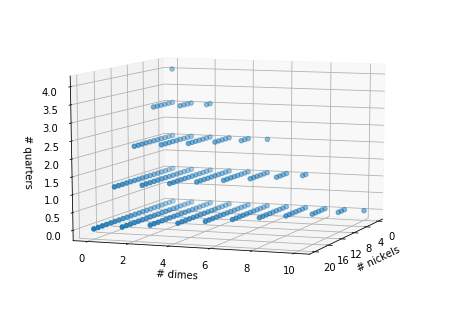

There are four ways to make change for \(N=10\) cents: \(\{\)10 pennies; 1 nickel and 5 pennies; 2 nickels; 1 dime\(\}\). How many ways are there to make change for one trillion dollars — using just pennies, nickels, dimes, and quarters? To answer this, we present here a hybrid dynamic programming / analytic strategy that allows us to count the number of ways \(\mathbb{Q}(N)\) to make change for any \(N\).
The result for one trillion dollars?
\(\mathbb{Q}(10^{14}) = 133333333333423333333333351000000000001\).
Dynamic programming solution
We begin by introducing a set of recursion relations that will directly allow for a “pure” dynamic programming strategy for counting the number of ways to make change:
Let, \(\mathbb{Q}(N), \mathbb{D}(N), \mathbb{N}(N)\) and \(\mathbb{P}(N)\) be the number of ways to make change for \(N\) cents allowing all four denominations, allowing only up to dimes (i.e., excluding quarters), only up to nickels, and finally only pennies, respectively. Next, we note that
Here, we have decomposed the number of ways to make change in terms of the number of quarters included. For example, the second term in the first line above is the number of ways to make change when we have exactly \(1\) quarter: The count in this case is simply the number of ways we can make change for \(N-25\) cents, using only dimes, nickels, and pennies — i.e., \(\mathbb{D}(N-25)\). Similarly,
and
Finally, \(\mathbb{P}(N) \equiv 1\) for all natural \(N\).
It is straightforward to sum the above equations in reverse using dynamic programming: We start by using the fact that \(\mathbb{P}(N) = 1\) all natural \(N\), then evaluate \([\mathbb{N}(1), \ldots, \mathbb{N}(N)]\) on a computer using the iterative equation (\ref{n_iter}). Storing these values in memory, we can then evaluate \([\mathbb{D}(1), \ldots, \mathbb{D}(N)]\) using (\ref{d_iter}), and then finally evaluate \([\mathbb{Q}(1), \ldots, \mathbb{Q}(N)]\) using (\ref{q_iter}). A python program that carries out this strategy is given below. Using this we are able to evaluate that, e.g., the number of ways to make change for one dollar is \(\mathbb{Q}(100) = 242\).
The program below is sufficient for “practical” \(N\), but we need to do better to count the number of ways to make change for one trillion dollars: On my laptop, I can evaluate the result for one-hundred thousand dollars in about \(20\) seconds. The runtime of our program scales linearly with \(N\) though, so it would take it about \(2 \cdot 10^{7}\) seconds to get our target result — too slow.
import numpy as np
def ways_to_make_change(N, denominations_list=[1, 5, 10, 25]):
"""
This function calculates the number of ways to make change for N cents,
using only the denominations included in the passed `denominations_list`.
parameters
----------
N: int
The target number of cents we wish to make change for.
denominations_list: list
A list of denominations that we can use to make change.
"""
for index, denom in enumerate(denominations_list):
if index == 0:
counts = 1 * (np.arange(N + 1) % denom == 0)
else:
counts_lower_denoms = counts.copy()
for i in np.arange(denom, N + 1):
counts[i] = counts_lower_denoms[i] + counts[i - denom]
return counts
print(ways_to_make_change(100)[-1])
# output: 242
Geometric interpretation, large \(N\) limiting form

In this section, we briefly consider the geometry of our problem. The plot above is a 3d visual of all the possible ways to make change for one dollar: Each point here has an \((x,y,z)\) position that encodes the number of nickels, dimes, and quarters, respectively, in a particular change solution. To get the full solution for a particular lattice point, we calculate the sum \(5 x + 10 y + 25 z\) — subtracting this from \(N=100\) gives the number of pennies that must be included in its solution. In this way, we see that we get a valid solution at each non-negative lattice point whose coordinates give a sum that is not larger than \(100\).
For general \(N\), we have
where we are again counting all non-negative lattice points on a lattice spaced along \(x\) with distance \(5\), etc.
We note that the inequality (\ref{4}) defines a polytope, and that there is a beautiful, pre-existing body of work — based on the use of generating functions — that allows one to count the number of lattice points within an arbitrary polytope \([1]\). One can look up results from that line of work to directly answer the change counting problem we are considering here. However, the hybrid dynamic programming / analytic approach that we present below — based on our recursion relations above — is more tailored to our problem and consequently easier to derive.
Before moving on, we point out that we can get a good approximation to the number of lattice points at large \(N\) by simply considering the volume of the polytope: The idea is to make use of the fact that the lattice points are evenly spaced. To the find an approximation to the number that sit inside the polytope then, we simply need to divide the polytope’s volume (\(\frac{1}{3!} N^3\)) by the volume of each lattice cell (\(5 \cdot 10 \cdot 25\)). This gives [2],
Eq. (\ref{5}) is the correct, leading behavior at large \(N\). However, it’s not exact because of “discreteness effects” that occur at the boundary of our polytope — these determine whether specific, individual lattice points lie inside the polytope or not. These effects result in correction terms at quadratic and lower powers of \(N\). Our calculation below provides one method for capturing the full set of terms.
Exact solution
To get the exact result for \(\mathbb{Q}(N)\), we will directly sum the recursions relations (\ref{q_iter})-(\ref{n_iter}): Recall from above, that we have
for any natural \(N\). Plugging this into (\ref{n_iter}), we obtain
Notice that if we evaluate this at a series of points separated by \(\Delta N = 5\), we get back what looks like a simple linear function of \(N\) — it increases by \(1\) with each increase of \(5\) in \(N\).
Now, if we plug our last line into (\ref{d_iter}) we obtain
This is an arithmetic sequence that depends on \(\lfloor \frac{N}{5} \rfloor\). Summing this series, we obtain
Notice that in this case, if we evaluate the function at a series of points each separated by \(10\), the result will again look like a simple, smooth function — this time a quadratic function of \(N\). However, the particular form of the quadratic depends on whether \(\lfloor \frac{N}{5} \rfloor\) is even or odd — that is, the function skips back and forth between two different quadratics.
We are now at the point where we can solve for the full number of ways to make change, \(\mathbb{Q}(N)\). In principle, all we need to do is to plug (\ref{9}) into (\ref{q_iter}), and sum as above. This is straightforward for a particular \(N\), but we’d like a general formula. If we work out a few terms for any particular value of \(N\), we see that we will get alternating terms: perhaps starting with a term of the upper type from (\ref{9}), followed by a term of the lower type, etc. The sums of the upper form can be evaluated analytically (e.g., by using the pyramid summation method), as can the sum of the terms of the bottom form. For any starting point, the result is a cubic in \(\lfloor \frac{N}{5} \rfloor\). However, a small bit of work shows that the precise cubic form that applies depends on the value of \(\lfloor \frac{N}{5} \rfloor (\text{mod } 10)\), so we have ten separate cubics to solve for.
Rather than laboriously evaluate the sums for each of the ten possible remainders of \(\lfloor \frac{N}{5} \rfloor\) modulo \(10\), we can simply carry out polynomial fits to data that we get from our python implementation of the dynamic programming approach. For example, plugging the first four values of \(N\) that satisfy \(\lfloor \frac{N}{5} \rfloor \equiv 0 (\text{mod } 10)\) into our program, we get
Fitting a cubic to this data — which involves solving a system of linear equations for the unknown coefficients of the polynomial — gives
Again, this holds when \(\lfloor \frac{N}{5}\rfloor \equiv 0 (\text{mod } 10)\). This is the equation we used to get the result quoted for one trillion dollars at the top of our post. Notice that the leading term here matches what’s required by our asymptotic result, (\ref{5}).
It turns out that when we plug in data for each of the other nine possible remainders, the cubic fits returned are all the same — except for their constant terms. Presumably, this is because the coefficients of positive powers of \(N\) each correspond to some asymptotic, geometric effects that must all agree when \(N\) is large — as we discussed above. At any rate, we have tabulated the constant terms that apply for each possible remainder below, and this completes our solution.
| \(\lfloor \frac{N}{5} \rfloor \mod(10)\) | constant term in \(\mathbb{Q}(N)\) |
|---|---|
| \(0\) | \(1\) |
| \(1\) | \(\frac{7}{8}\) |
| \(2\) | \(\frac{6}{5}\) |
| \(3\) | \(\frac{7}{8}\) |
| \(4\) | \(\frac{4}{5}\) |
| \(5\) | \(\frac{7}{8}\) |
| \(6\) | \(1\) |
| \(7\) | \(\frac{43}{40}\) |
| \(8\) | \(1\) |
| \(9\) | \(\frac{27}{40}\) |
Acknowledgements
This work in this post was done in collaboration with my father, Steven Landy.
References
[1] Beck, Matthias, and Sinai Robins. Computing the continuous discretely. Vol. 61. Berlin: Springer Science+ Business Media, LLC, 2007.
[2] One way to derive this volume result is to integrate the recursion relations (1)-(3), ignoring discreteness effects — i.e., integrate assuming that each of the variables \(\mathbb{P}(N), \mathbb{N}(N), \mathbb{D}(N)\), and \(\mathbb{Q}(N)\) are smooth functions of \(N\). This will hold in the large \(N\) limit to leading order, so will give us the leading order result.
 Jonathan grew up in the midwest and then went to school at Caltech and UCLA. Following this, he did two postdocs, one at UCSB and one at UC Berkeley. His academic research focused primarily on applications of statistical mechanics, but his professional passion has always been in the mastering, development, and practical application of slick math methods/tools. He currently works as a data-scientist at Stitch Fix.
Jonathan grew up in the midwest and then went to school at Caltech and UCLA. Following this, he did two postdocs, one at UCSB and one at UC Berkeley. His academic research focused primarily on applications of statistical mechanics, but his professional passion has always been in the mastering, development, and practical application of slick math methods/tools. He currently works as a data-scientist at Stitch Fix.